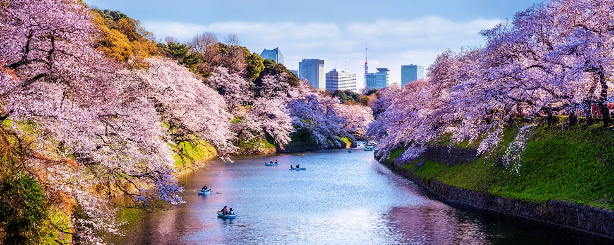

TOKYO
México es un país entre los Estados Unidos y América Central, conocido por las playas en el Pacífico y el golfo de México, y su diverso paisaje de montañas, desiertos y selvas. Las ruinas antiguas, como Teotihuacán y la ciudad maya de Chichén Itzá, se distribuyen por el país, al igual que las ciudades de la época colonial española. En la capital Ciudad de México, las elegantes tiendas, los famosos museos y los restaurantes gourmet son parte de la vida moderna.
